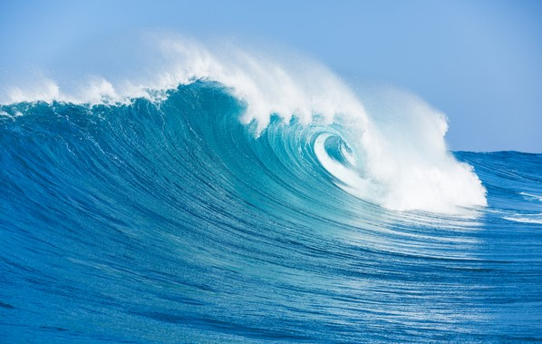
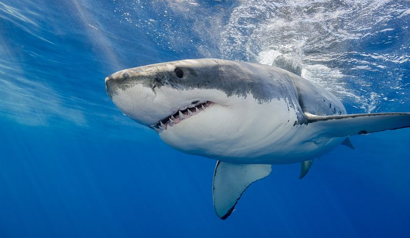

The Atlantic Ocean, explained
FOR CENTURIES The Atlantic Ocean has been a key avenue of trade and
travel. Stretching from the Arctic Circle to Antarctica, the Atlantic Ocean is
bordered by the Americas to the west and Europe and Africa to the east.
It's more than 41 million square miles, the second-largest ocean on Earth
after the Pacific Ocean.
Scientists and geographers broadly separate the Atlantic in terms of north
and south. The North Atlantic and South Atlantic each have distinct ocean
currents that influence weather around the world.
Water currents and gyres
The ocean doesn't sit still like water in a sink. It moves more like a conveyer
belt that's driven by changes in temperature and salinity over large areas.
Both quick-moving surface currents and slower-moving deep ocean currents
circulate water around the globe.
The seawater is constantly trying to find a balance. Warm water is less dense
than cold water, so as water cools, it sinks, and warm water replaces it. Water
with high salinity—more salt—also moves into waters with lower salinity.
Those factors drive the conveyer belt, a process also called thermohaline
circulation.

Hurricanes
Without Africa's Sahara Desert, few hurricanes would strike the eastern coast
of North America. That's because a wind stream called the African Easterly
Jet is formed from the difference in the Sahara's dry, hot air and the humid
cooler air to the west and south. The jet pushes westerly winds over Africa's
west coast, where they sometimes pick up ocean water and form
thunderstorms.
Hurricanes are fueled by warm waters, and warmer Sahara summer winds
drive some of the biggest hurricanes seen in the U.S. Those that form off the
coast of Africa must survive wind shear (horizontal winds) to hit the East
Coast with full force.
Occasionally, as with Hurricanes Florence and Harvey, storms weaken as
they make their way across the Atlantic Ocean but are then refueled by warm
waters off the East Coast or in the Gulf of Mexico.

Sea life
The Atlantic Ocean is home to a diverse array of sea life, both those we can
observe at the surface, and those all but hidden from human eyes.
In December 2018, National Geographic published photos from a deep-sea
dive led by ocean research group OceanX. Images revealed the Northeast
Canyons and Seamounts Marine National Monument, a federally protected
marine area off the coast of Massachusetts, and it is teeming with
biodiversity. A variety of corals, fish, and mollusks were found more than
3,000 feet below the sea.
